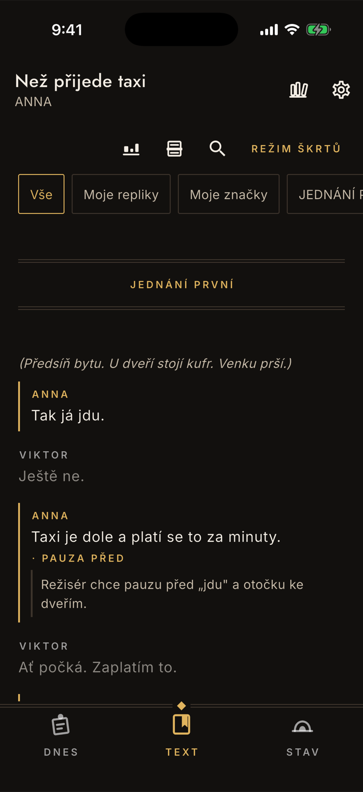
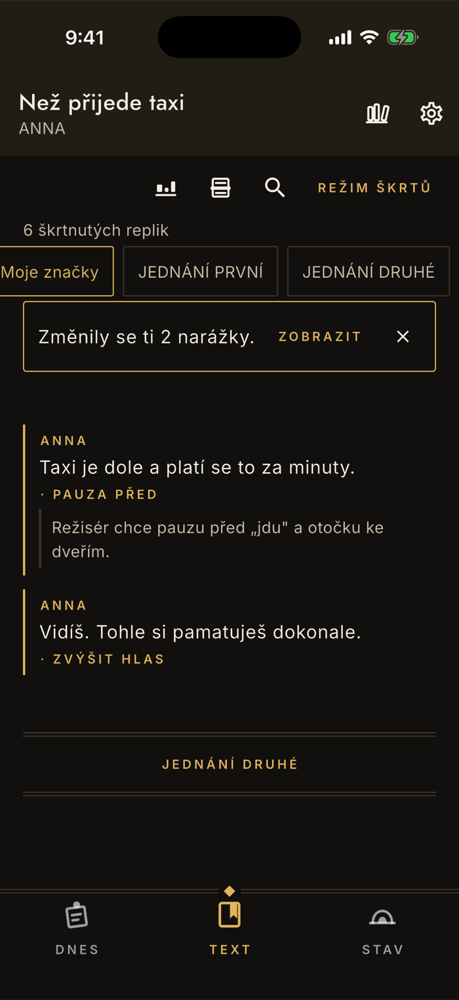
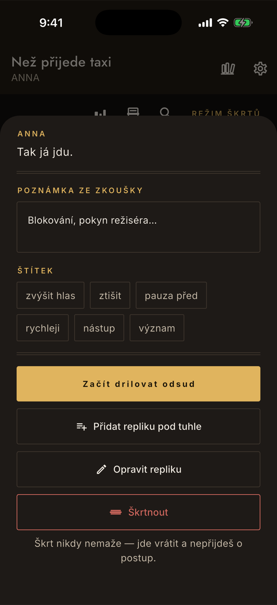
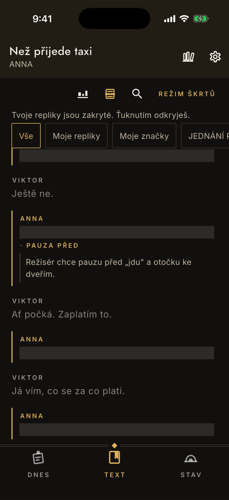
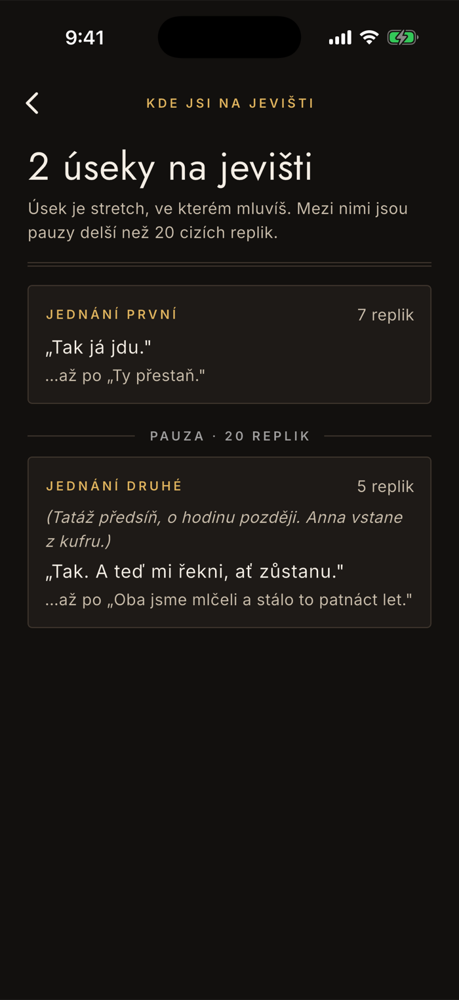

Text
Čtečka: text, poznámky a značky
Záložka Text je tvůj scénář — ne PDF, ale rozparsovaná hra, ve které appka ví, co je tvoje. Dá se v ní hledat, filtrovat, zapisovat pokyny ze zkoušky a zakrýt si vlastní repliky. Škrty mají vlastní stránku.
Text
Tvoje repliky poznáš na první pohled
Mají mosaznou linku vlevo, jméno zlatě a plnou barvu textu. Cizí repliky jsou ztlumené — čteš v kontextu, ale oko jde po tvých.
Poznámky a dějství
Scénické poznámky se sázejí kurzívou v závorkách, hlavičky dějství na střed mezi dvojité linky. Sloupec textu má pevnou šířku i na tabletu, aby se řádky daly číst očima, ne hlavou.
Věta nad textem ti řekne, co se děje
Kolik replik je škrtnutých, že jsou tvoje repliky zakryté, nebo co udělá ťuknutí. Když není co říct, věta zmizí.
Ťuknutí otevře repliku
Jedno ťuknutí, žádné podržení. Otevře se panel s poznámkou, štítkem a akcemi — viz níž.

Filtry a hledání
Zúžíš text na to, co teď řešíš
Filtry jsou čipy nad textem a přepínají se jedním ťuknutím. Zpátky na celý scénář se dostaneš čipem Vše.
Moje repliky
Jen to, co říkáš ty. Hlavičky dějství zůstávají vidět vždycky, ať se ve výběru neztratíš.
Moje značky
Repliky, u kterých máš poznámku nebo štítek. Před zkouškou je to nejrychlejší způsob, jak si projet všechno, co ti kdy režisér řekl. Čip se nabídne jen tehdy, když je co ukázat.
Dějství
Za značkami jsou čipy dějství, přesně jak je appka našla ve scénáři.
Hledání
Lupa v liště. Filtruje při každém znaku a hledá v replikách i v poznámkách scény. Nehledá podle jména postavy a nerozumí diakritice — „rekni" nenajde „řekni".

Panel u repliky
Poznámka ze zkoušky a štítek
Sem patří, co ti řekl režisér. Poznámka se ukládá každým znakem, žádné tlačítko Uložit není — na zkoušce není čas potvrzovat.
Poznámka pro blokování a pokyny
Volný text. Prázdná poznámka se smaže, ne uloží, takže se seznam značek nezaplevelí.
Jeden štítek na repliku
Ťuknutím vybereš, dalším ťuknutím na týž štítek ho odebereš. Nabízí se šest výchozích — zvýšit hlas, ztišit, pauza před, rychleji, nástup, význam — a v nastavení si je můžeš změnit. Nejvýš osm, aby se daly vybrat pohledem.
A odsud se dá rovnou pokračovat
Začít drilovat odsud spustí dril od téhle repliky — „vezmeme to od…" je na zkoušce běžná věta. Dál jde repliku opravit, doplnit chybějící, nebo ji škrtnout.

Zatemnění
Zakryješ si vlastní repliky
Papírová obdoba je proužek přiložený přes vlastní text v knížce. Tvoje repliky se schovají pod pruh, cizí zůstanou čitelné — takže se zkoušíš v kontextu, ne z izolovaných kartiček.
Jméno a nástup zůstanou
Vidíš, že jsi na řadě, i vedoucí scénickou poznámku. Skryje se jen to, co si máš vybavit.
Ťuknutím odkryješ jednu
Odkrytá zůstane, dokud zatemnění nevypneš — pak se všechny zakryjí znovu. Je to čtení, ne dril: nic se nikam nezapisuje.

Kde jsi na jevišti
Kdy mluvíš a kdy máš pauzu
Rozdělí roli na úseky — souvislé části, ve kterých mluvíš — a mezi ně vloží pauzy. Herec potřebuje vědět, kdy má dlouho volno a kdy se text valí bez přestávky.
Nový úsek začíná po dlouhé pauze
Když mezi tvými replikami uplyne víc než dvacet cizích, jde o nový úsek. Hranicí je i začátek dějství.
U úseku je první a poslední replika
A když se v poznámkách před nástupem mluví o tvé postavě, appka tu poznámku ukáže jako nápovědu k nástupu.
Ťuknutím na úsek se rozjede dril
Od první tvojí repliky v tom úseku. Hodí se, když se zkouší jedna scéna a zbytek hry teď neřešíš.

Co je ve čtečce zdarma
Všechno na téhle stránce. Celý text, zvýraznění vlastních replik, filtry, hledání, poznámky, štítky, zatemnění, přehled úseků i oprava a doplnění repliky — to jsou nástroje na vlastní text a na vady importu, a za ty se nikdy neplatí.
Za plnou verzi je ve čtečce jediná věc: výpis toho, které narážky se po škrtu změnily. Samotné upozornění, že se změnily, a jejich počet vidíš i bez ní. Popisuje to stránka Škrty a jak s nimi zacházet.
Co si čtečka pamatuje
Když přepneš na jinou záložku a vrátíš se, zůstává pozice v textu, nastavený filtr i zatemnění. Je to jedna z těch věcí, které si člověk uvědomí, teprve když je nefungují.
Chybí vám ve čtečce něco, co na zkoušce potřebujete?
contact@lukashula.cz